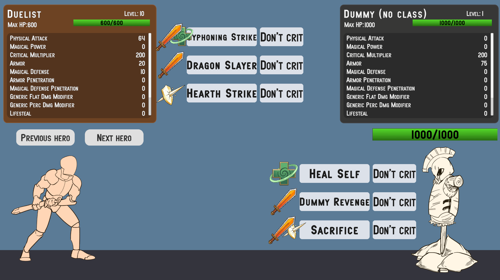
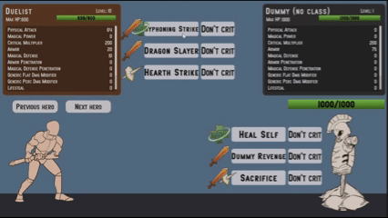

Samples
No More Utils Folder
Diversamente da Astra RPG Framework, in questo package non troverete una cartella Utils tra i vari samples. Ho preso questa decisione perche' ritengo che sia piu' saggio e robusto lasciare che siate voi crearvi le vostre istanze. Questo perche' se costruite il vostro progetto attorno alle istanze che vi fornisco nei samples, e poi decidete di importare una nuova versione del package e reimportare i samples, rischiate di fare confusione su quali istanze di quale versione state attualmente usando per il vostro progetto. Lasciandovi creare a voi tutte le istanze degli oggetti del framework questa problematica viene completamente evitata.
Inoltre, le istanze presenti nei samples della scena di esempio sono marchiati con un suffisso (Astra Health Samples) che li rende facilmente identificabili e distinguibili da eventuali istanze che potreste creare voi per il vostro progetto.
Se volete prendere ispirazione dalle istanze presenti nei samples, potete farlo tranquillamente, ma vi consiglio di creare nuove istanze per il vostro progetto, in modo da evitare qualsiasi confusione futura.
Examples Folder - Overview
All'interno della cartella Examples troverete una scena di esempio: e' il vostro sandbox per provare le funzionalita' di Astra RPG Health. Rispetto a quella minimale di Astra RPG Framework, questa scena ha piu' contenuti e funzionalita' da esplorare.
La scena copre tutte le funzionalita' principali di Astra RPG Health:
- Health System
- Damage Types
- Damage Sources
- Damage Reduction
- Defense Penetration
- Healing System
- Heal and Damage Modifiers
- Passive Regeneration
- Resurrection System
- Event System
- Health Scaling Component
- Experience Collection System
The Scene - Overview

Sample scene as you enter in play mode
Se aprite e avviate la scena di esempio, vedrete un combattente stilizzato sulla sinistra (Duelist) e un manichino sulla destra (Dummy). Senza troppe sorprese, potrete scatenare l'ira del vostro personaggio contro il povero manichino al fine di testare le funzionalita' di Astra RPG Health. Prima di prendercela con il manichino, diamo un'occhiata al resto della scena. Sopra il duelist c'e' un pannello contenente il nome del personaggio, il livello, l'eventuale classe, l'health bar, e infine i valori delle statistiche del personaggio. Un analogo pannello e' presente sopra il manichino. Potete scorrere con la rotellina del mouse su questi pannelli per visualizzare tutte le statistiche. Noterete che a differenza della scena di esempio di Astra RPG Framework, in questa scena i pannelli non mostrano gli attributi. Questo perche' ho volontariamente escluso il loro utilizzo in questa scena, al fine di concentrarci sulle funzionalita' di Astra RPG Health. Se avessi incluso anche gli attributi, sarebbe stato piu' complesso ragionare ragionare sull'effetto delle formule di calcolo del danno, delle riduzioni, delle penetrazioni e cosi' via, dal momento che i valori delle statistiche sarebbero stati influenzati anche dagli attributi. Quindi, per semplicitá, in questa scena di esempio dovrete concentrarvi solo sulle statistiche.
Oltre ai pannelli delle statistiche, noterete che sono presenti anche dei pulsanti con una o due icone alla loro sinistra. Questi rappresentano le abilita' che ogni personaggio puo' utilizzare. E si', anche il dummy in questo caso ha voce in capitolo e puo' vendicarsi dei sopprusi subiti nei vari videogiochi negli ultimi decenni.
Ogni personaggio ha 3 abilita'; ogni riga di icona/e + 2 pulsanti costituisce una abilita' a se'. Per ciascuna abilita', il primo pulsante ne contiene il nome ed e' il punto d'attivazione. Il pulsante alla sua destra e' un toggle che definisce se l'abilita' effettuera' un colpo critico o meno. Infine, l'icona, o le icone, alla sinistra del nome dell'abilita' rappresentano i tipi di danno che i vari effetti dell'abilita' possono infliggere, o una cura se l'effetto dell'abilita' e' di guarigione. Una singola icona significa che l'abilita' ha un singolo effetto, mentre due icone indicano che l'abilita' ha due o piu' effetti. Nel caso vi fossero, 3 o piu' effetti, solo le icone dei primi 2 effetti saranno mostrate.
Le icone che troverete saranno in tutto 4:
- Una spada arancione, che rappresenta il danno fisico
- Una fiamma viola, che rappresenta il danno magico
- Uno scudo bianco perforato, che rappresenta il danno puro
- Una croce verde, che rappresenta la guarigione
La spada, la fiamma e lo scudo rappresentano quindi effetti di danno, e sono associate ai rispettivi damage types. La croce verde rappresenta invece un effetto di guarigione.
Warning
Ci tengo a specificare che l'implementazione data per le abilita' in questa scena di esempio e' semplicistica e non rappresenta un sistema di abilita' completo. Era necessario introdurre un ability system minimale per poter dimostrare le funzionalita' di Astra RPG Health, ma non considerate questa implementazione come un punto di riferimento per la creazione di un sistema di abilita' piu' complesso.
Sara' responsabilita' di un futuro package di estensione di Astra fornire un sistema di abilita' completo e flessibile. Per ora, considerate questa implementazione come un semplice strumento per testare le funzionalita' di Astra RPG Health.
Noterete inoltre che appena sopra la testa del duelist ci sono un paio di pulsanti, che recitano "Next Hero" e "Previous Hero". Questi pulsanti vi permettono di cambiare il vostro personaggio. Oltre al duelist, che si focalizza su abilita' che arrecano danno fisico e di guarigione, ci sono altri 2 personaggi, ognuno con un focus diverso. Il secondo personaggio, l'Assassin, si focalizza su abilita' che arrecano danno fisico e puro, talvolta con scaling sulla salute del nemico. Il terzo personaggio, il Mage, si focalizza su abilita' che arrecano danno magico.
The Hierarchy - Overview
Se date ora un'occhiata alla gerarchia della scena vedrete che, oltre gli oggetti principali di default, contiene:
- l'entita' dummy
- il canvas del dummy (pannello delle statistiche e pannello delle abilita')
- una sezione con le entita' dei tre personaggi giocabili (duelist, assassin e mage). Il duelist e' attivo all'avvio della scena, mentre gli altri due personaggi sono disattivati. Cambiando personaggio con i pulsanti "Next Hero" e "Previous Hero", ciclerete tra questi tre personaggi, attivandone uno alla volta e disattivando gli altri due.
- una sezione con i canvas dei tre personaggi giocabili (pannello delle statistiche e pannello delle abilita' per ciascun personaggio). Anche in questo caso, il canvas del duelist e' attivo all'avvio della scena, mentre gli altri due canvas sono disattivati.
- Un oggetto
HeroSelector. Questo oggetto ha come figli i game object che rappresentano i pulsanti "Next Hero" e "Previous Hero". - Un oggetto
PopupCanvas, che contiene due sotto-oggetti:DamagePopupManagereHealPopupManager. Questi oggetti sono responsabili della creazione dei popup di danno e guarigione che appaiono sopra la testa dei personaggi quando subiscono danno o ricevono guarigione.
Ciascuna entita' ha i componenti Astra EntityCore, EntityClass, EntityStats, e il nuovo EntityHealth nell'oggetto radicale. Il manichino non possiede una classe. Questa scelta non e' per discriminare il nostro amico legnoso, ma semplicemente perche' semplifica il cambiamento delle statistiche del manichino al fine di agevolare il testing delle funzionalita' del package. In questo modo, se voleste cambiare l'Armor per vedere come cambia la riduzione del danno in real-time, non dovete andare ad operare attraverso la Growth Formula associata a quella statistica nella classe del manichino, ma potete semplicemente modificarne il valore attraverso EntityStats. Semplice ed efficace.
Ogni entita' (compreso il dummy) ha inoltre due sotto-oggetti: Visuals e Skills. Il primo contiene tutti gli oggetti responsabili della rappresentazione visiva del personaggio (sprite e health bar per il dummy, sprite e sprite dell'attacco per i personaggi del giocatore), mentre il secondo serve per specificare le abilita' del personaggio.
Gli oggetti relativi ai canvas delle entita' hanno invece i seguenti sotto-oggetti: un HeroPanel responsabile di mostrare il pannello con nome, livello, classe, health bar e statistiche del personaggio, e uno SkillsPanel, che contiene i pulsanti e le icone relativi alle abilita' del personaggio.
The Project Files - Overview
Nell'esplorer delle risorse, nei samples del package, oltre la scena di esempio, avrete queste cartelle:
- Art: Contiene tutte le risorse artistiche utilizzate nella scena di esempio.
- Instances: Questa e' la cartella piu' importante, in quanto contiene tutte le istanze degli oggetti forniti da Astra RPG Health. Vi ritroverete a interagire molto con queste istanze per testare le funzionalita' del package, e potrete prendere ispirazione da esse per creare le vostre istanze personalizzate per il vostro progetto.
- Prefabs: Contiene i prefab di tutti gli oggetti presenti nella scena di esempio.
- Resources: Contiene l'istanza di configurazione di Astra RPG Health per la scena di esempio.
- Scripts: Contiene tutti gli script utilizzati nella scena di esempio.
Warning
Una nota in merito a Resources. Come spiegato in Global Settings, Astra RPG Health utilizza un'istanza di AstraRpgHealthConfigSO per configurare le sue funzionalita' nel vostro progetto Unity. Questa specifica istanza fornita nei samples e' stata configurata per la scena di esempio. La scena funziona sin da subito perche la risorsa di configurazione, chiamandosi esattamente Astra Rpg Health Config, viene automaticamente caricata da Astra RPG Health all'import del package e assegnata nella configurazione globale del package.
Quando andrete a creare la vostra istanza AstraRpgHealthConfigSO di configurazione per il vostro progetto, dovrete assegnarla manualmente alla configurazione globale di Astra RPG Health, come spiegato in Project Settings attraverso le project settings, o in alternativa, come spiegato in Manual Configuration, assegnandola direttamente all'istanza AstraRpgHealthGlobalSettings presente nella cartella Assets/Resources (questa cartella resources e' collocata radicalmente negli Assets, non nei samples del package).
Se non assegnate la vostra istanza di configurazione alla configurazione globale di Astra RPG Health, il package continuera' ad utilizzare la configurazione dei samples, creando confusione e potenziali problemi di configurazione.
Instances Folder
Ora ci concentreremo sulla cartella Instances, che e' quella piu' rilevante per voi.
Spare objects: Default Damage Calculation Strategy and Lifesteal Config
Partiamo da due oggetti sfusi: Default Damage Calculation Strategy e Lifesteal Config. Il primo rappresenta la strategia di calcolo del danno utilizzata di default nella scena. Il secondo rappresenta la configurazione del lifesteal; tutti i tipi di danno utilizzano la stessa stat Lifesteal per il calcolo del lifesteal.
Statistics and Stat Sets
Nella cartella Stats trovate tutte le istanze delle Stat e degli StatSet utilizzati nella scena di esempio. Potete esplorare voi nel dettaglio le statistiche e gli stat set, l'unica cosa che sottolineo e' che l'Hero Stat Set e' lo stat set utilizzato da tutti e 4 i personaggi della scena di esempio (duelist, assassin, mage e dummy).
Classes
Nella sottocartella Classes trovate tutte le classi per i 3 personaggi giocabili e tutte le relative growth formula che definiscono la progressione delle loro statistiche. C'e' anche una cartella Common che contiene alcune utilita' condivise da piu' classi. Ad esempio, la 200% Const Critical Multiplier GF e' una growth formula che restituisce un moltiplicatore di 200% per i colpi critici a tutti i livelli. Solitamente un gioco utilizza un moltiplicatore fisso per tutte le entita' a tutti i livelli, quindi non ha senso duplicare questa growth formula in ogni classe, ma e' piu' efficiente creare un'unica istanza singola e condividerla tra tutte le classi che ne hanno bisogno.
Damage Sources
Nella sottocartella Damage Sources trovate tutte due damage sources: Skill e Environmental. La scena non fa uso di danni ambientali, ma la damage source e' utilizzata nella Experience Collection, in particolare nella strategia Environmental Kill Exp Strategy. Quindi, sebbene non sia testabile nella scena, ha valore di esempio per mostrarvi come creare e configurare una strategia multipla che usa sia la direct kill che la environmental kill strategies.
Damage Types
Nella sottocartella Damage Types trovate i tre tipi di danno utilizzati nella scena di esempio: Physical, Magical e True, e due cartelle contenenti le tre varianti di Damage Reduction Functions e Defense Reduction Functions. Attualmente, sia physical che magical damage utilizzano la formula logaritmica per la riduzione del danno sulla base della statistica difensiva, e la riduzione percentuale per la penetrazione della statistica difensiva. Le ho fornite tutte e tre per agevolarvi il testing qualora voleste sostituire le formule al volo.
Events
In Events invece trovate tutte le istanze degli eventi di gioco utilizzate dalla scena di esempio. Tutte le istanze appartengono ad Astra RPG Health eccetto per Entity Leveled Up Game Event e Entity Leveled Down Game Event.
Questi eventi sono stati collegati come global events nella configurazione AstraRpgHealthConfigSO.
Tutte le comunicazioni tra i vari oggetti della scena di esempio vengono gestite attraverso questi eventi.
Experience Collection
Nella cartella Experience Collection ci sono tutte le istanze e le strategie utilizzate per la raccolta dell'esperienza nella scena di esempio. Come menzionato in precedenza, la scena di esempio non prevede l'utilizzo di danni ambientali, ma ho comunque incluso una strategia Environmental Kill Exp Strategy per mostrarvi come creare e configurare una strategia multipla che utilizza sia la direct kill che la environmental kill strategies.
Heal Sources
A differenza delle damage sources, nella scena di esempio vengono usate tutte e 4 le HealSourceSO che trovate nella cartella Heal Sources:
HP Regeneration: utilizzata dagli eventi di rigenerazione passiva della saluteLifesteal: utilizzata dagli effetti di lifestealResurrection: utilizzata dalla cura applicata alla resurrezione di un'entita'Skill: utilizzata dalle abilita' che hanno effetti di guarigione
On Death Game Actions & On Resurrection Game Actions
In On Death Game Actions e On Resurrection Game Actions trovate invece le istanze delle game actions utilizzate per definire il comportamento delle entita' in risposta alla loro morte e resurrezione rispettivamente. Tratteremo meglio questo argomento piu' tardi in questa pagina.
Skills
Infine, nella cartella Skills trovate tutte le istanze delle abilita' utilizzate nella scena di esempio, suddivise per personaggio. Ogni abilita' ha una propria istanza di SkillSO, e una ScalingFormula con uno o piu' ScalingComponent associati. Alcune abilita', come menzionato prima, possono avere piu' di un effetto. In tal caso, hanno una scaling formula per ogni effetto.
Interacting with the Scene
Ora che abbiamo esplorato la scena di esempio, la gerarchia e i file di progetto, vi do alcune informazioni su alcune configurazioni specifiche che meritano due parole in piu'.
Casting skills to deal damage and heal
Le skill della sample scene si possono riassumere, dal punto di vista tecnico, come dei costruttori di PreDamageContext e PreHealContext che instradano questi contesti verso le entita' bersaglio. Il bersaglio processerà questi contesti nei suoi metodi heal e TakeDamage. Il calcolo dei danni che avviene all'interno di TakeDamage, come abbiamo visto nei workflows, passa attraverso la pipeline del calcolo del danno. La pipeline usa la strategia che è stata configurata a livello di configurazione AstraRPGHealthConfigSO.
Quando l'entità viene curata o subisce danni, invocherà i rispettivi Global Events configurati anch'essi nella configurazione del package. E gli heal e damage pop-up managers che trovate nella hierarchy sono in ascolto di questi due eventi rispettivamente. Quando ricevono l'evento, creano un pop-up sopra la testa del personaggio bersaglio che mostra l'ammontare di danno subito o guarigione ricevuta. I pop up del danno avranno colori e icone diverse in base al tipo di danno inferto. Le icone (e il colore) combaceranno con quelle che vedete alla sinistra dell'abilità che avete lanciato.
